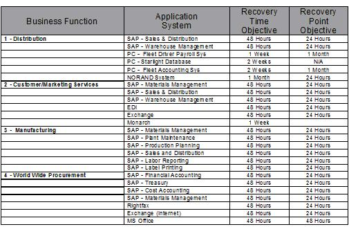
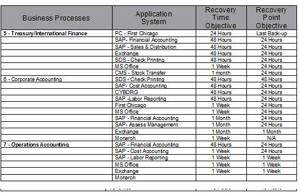
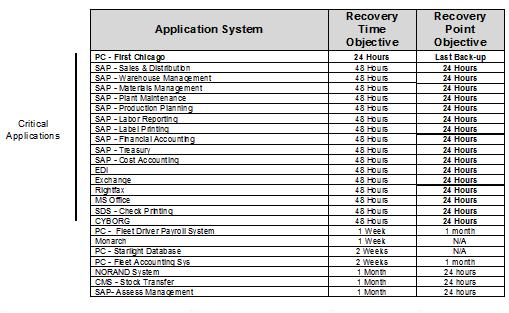
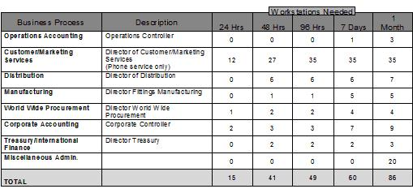

Introduction
It also documents the implications of deviations from these requirements. The priority subset of applications are
documented in addition to the subset of applications for which there is no continuity. The risks associated with no
continuity are documented as well.
Business value, associated costs, and information loss are important factors in determining the requirements.
IT Continuity Requirements can be defined in many areas. The following are typical, although the actual requirements
will depend on the scope of the engagement:
-
centralized server
-
distributed server
-
storage
-
facilities
-
network
Development Approach
To develop the IT continuity requirements:
-
Identify critical applications based on contractility, identified loss to the customers of that application, and
the implications to the business if this application were not restored within a reasonable (48 to 72 hours)
time. To do this, conduct interviews and workshops with the client. Prioritize the applications in
terms of which ones have the greatest impact to the business if they are unavailable.
-
Work with the client during workshops or meetings to determine the cost versus value of IT continuity for critical
applications. Many applications are deemed critical, such as payroll, but in fact, would generally not be
catastrophic if the application were not running for an entire payroll cycle. The things must be considered
before going to the next step.
-
Document the requirements and group them into logical categories. For each requirement, identify the
need to restore this application due to a catastrophic outage and the time period in which the user can assess the
applications. In many instances, another column next to the application would be if this requirement were
legal as stated in a service level agreement.
-
Prioritize the requirements.
-
Review the requirements with the client and gain the client’s acceptance or agreement to the requirements,
including costs.
Advice and Guidance
-
IT continuity requirements are developed by the technology team, which consists of both the client and IBM Global
Services representatives. Input is also gathered from the client's strategic direction for IT and originally
by the client's customers. If the requirements are not known and requirements need to be put in place from
the beginning, consider the time it will take and put a PCR in place to do the work.
-
Validation and verification is done with the client sponsor and IT client executives. The requirements should
be previously documented by the client prior to the consulting engagement. A good way to validate the
requirements would be to receive client approval on them and if they are not acceptable to have the costs available
to meet the client’s requirements to ensure that the requirement outweighs the costs.
-
This work normally takes 2-5 days to complete. It is done working with the client responsible for the
existing business plan and also has SLA information by application regarding requirements. Information on how
IT continuity is being performed today is generally used for what will be delivered in the future.
Example
Summary:
Business Impact Analysis and Environment Analysis were used to validate the Client's chosen recovery strategy and
configuration as well as identify additional recovery issues and concerns that should be addressed. In addition,
the Clients first ever I/T Recovery Plan was developed and documented. This was an SP2 environment using SAP and
included Intel servers.
Key Issues:
Client was unfamiliar with recovery planning methodologies and the process for documenting a recovery plan.
Client needed to be led through the process and tutored on the key issues.




|